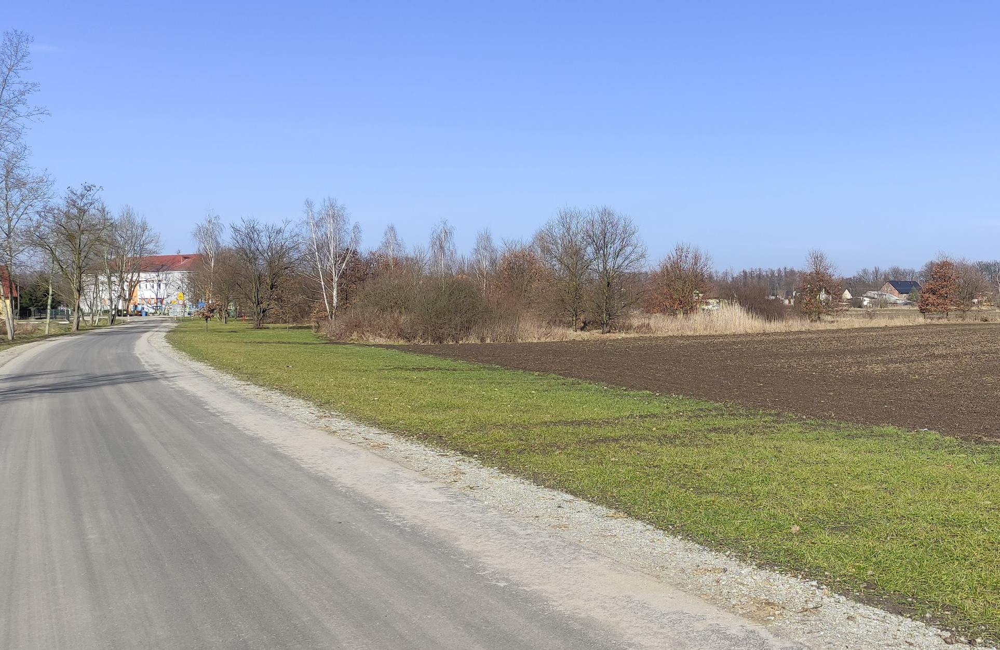
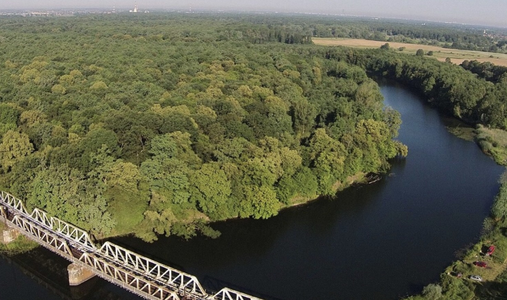
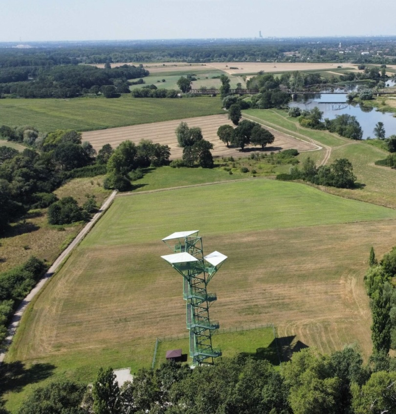
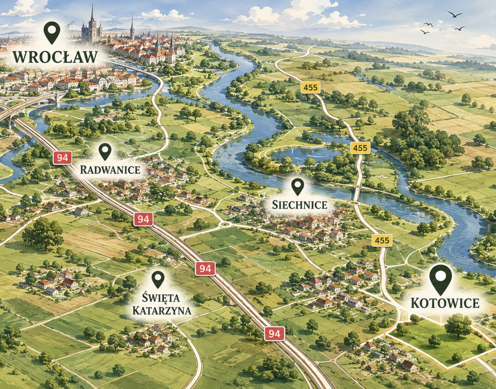
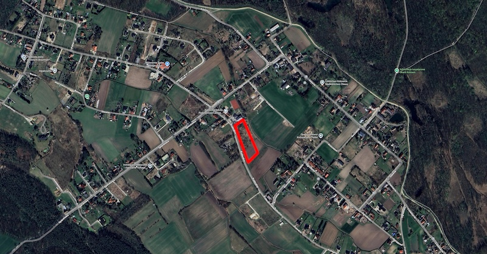
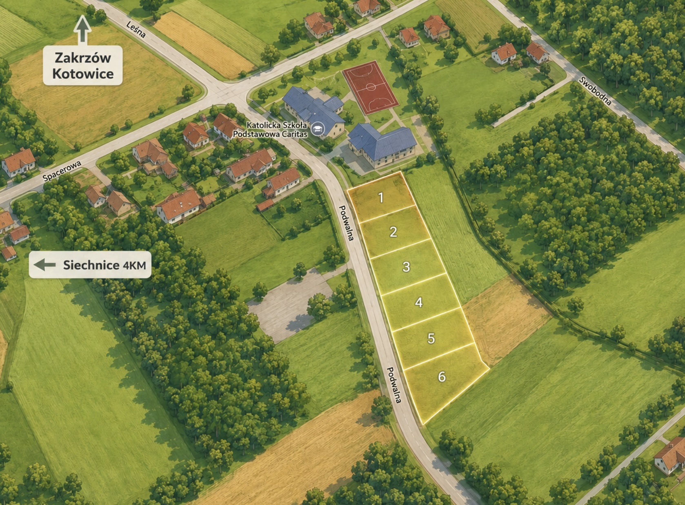

Zbuduj swój wymarzony dom w miejscu, w którym codzienna harmonia z naturą łączy się z błyskawicznym i niezawodnym dostępem do centrum miasta.
Kotowice to perełka na mapie wrocławskich przedmieść. To idealna propozycja dla osób i rodzin, które chcą wyrwać się z miejskiego smogu i hałasu. Z progu swojego przyszłego domu zaledwie po kilku krokach znajdziesz się w otoczeniu przepięknych Lasów Siechnickich, malowniczych starorzeczy Odry oraz czystych terenów w pobliżu Jeziora Dziewiczego.



Zapomnij o wyczerpujących dojazdach. Niezaprzeczalnym atutem tej działki jest odległość od nowej stacji Kolei Dolnośląskich. Nie akceptuj kompromisów w postaci słabego dojazdu czy stania w gigantycznych korkach do Wrocławia.
Dojazd prosto na Dworzec Główny we Wrocławiu zajmuje zaledwie od 15 do 21 minut!
Samochodem błyskawicznie włączysz się w ruch na Wschodniej Obwodnicy Wrocławia.
Wybierając tę działkę, omijasz pułapki tańszych gruntów w szczerym polu. Oferujemy pełne media bez niespodzianek.


Buduj co chcesz! Teren objęty jest nowym, elastycznym Miejscowym Planem Zagospodarowania Przestrzennego. Nowoczesna stodoła czy rozłożysta rezydencja? Wybór należy do Ciebie.
Max. powierzchnia zabudowy
Możesz posadowić tu rozłożysty dom parterowy o powierzchni rzutu aż 300 m².
Pow. biologicznie czynna
Twój dom wtopi się w wielki, 500-metrowy zielony ogród.
Dachy o nachyleniu 35° - 50° to idealne parametry pod najpiękniejsze dziś projekty architektoniczne i wydajne instalacje fotowoltaiczne.
Grunt nie został jeszcze fizycznie podzielony, co daje niespotykaną swobodę transakcyjną! Jesteśmy otwarci na szerokie pole do negocjacji.
Szukasz innej powierzchni niż 1000 m²? Z przyjemnością wydzielimy działkę dokładnie o takich wymiarach, na jakie się umówimy.
Możliwość sprzedaży całego gruntu: dz. 98/3 (4566 m²) oraz dz. 99/3 (2151 m²) - łącznie ponad 6700 m². Doskonała lokata pod osiedle!
Dla inwestorów komercyjnych oferujemy opcję przejęcia całej spółki z o.o., która jest wyłącznym właścicielem działek (optymalizacja).
Działka sprzedawana jest przez podmiot prawny na fakturę VAT. Jako kupujący NIE PŁACISZ u notariusza 2% podatku od czynności cywilnoprawnych (PCC).
To czysta oszczędność w gotówce na poziomie ponad 5 000 złotych już na samym starcie budowy!
Nie czekaj na wzrost cen po wdrożeniu kanalizacji. Skontaktuj się już dziś.